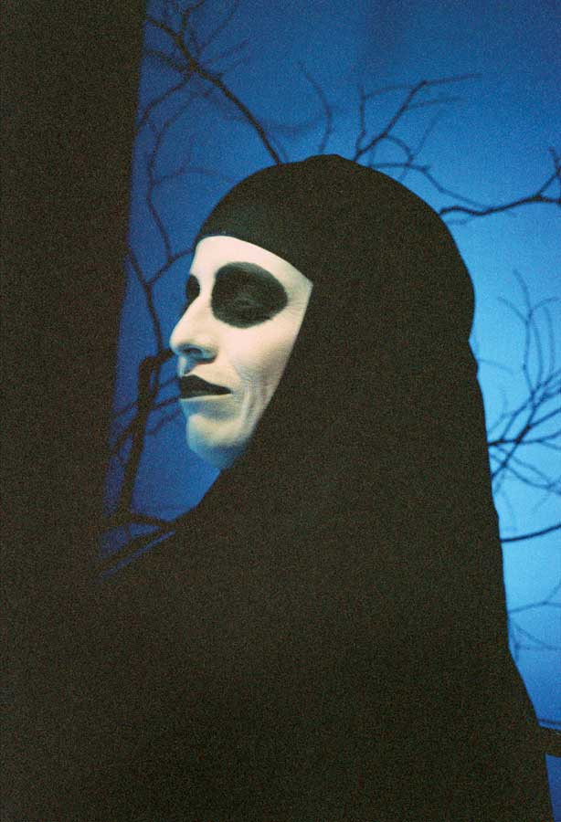

"O Marinheiro" Teatro Matacandelas
Por: Karoll Rocío Uribe / Actriz del Teatro UIS /
Licenciada en Educación Básica con énfasis en Lengua Castellana

En el escenario, un ambiente lúgubre y una atmósfera de muerte dio inicio a la obra "O Marinheiro" del grupo teatral Matacandelas de Medellín, por una segunda vez en el Festival Santander en Escena. Con un texto de Fernando Pessoa, escritor portugués, este colectivo puso en escena una pieza que nos muestra un género teatral particular: el teatro estático.
"O Marinheiro" nos envolvió en una atmósfera mortuoria y nos ubicó en torno a una mujer muerta y tres ánimas que hablaban sobre un pasado que nunca fue y solo se hacía real en los sueños. Contaban la historia de un marinero que construyó un mundo aparte con sus anhelos, para abandonar su realidad. En ocasiones, los espíritus miraban a través de la ventana y añoraban la vida que tenían o quisieron tener en su pasado, pero asimismo sabían que venía la mañana y que, con ella, desaparecerían. Un lenguaje poético y una serie de reflexiones filosóficas sobre el ser, lo real y la ficción de los sueños enmarcaron la trama de la obra. Por eso, es posible que no todos en el público crearan una conexión directa con la pieza. En ese sentido, me atrevo a afirmar que "O Marinheiro" es una obra creada para un grupo selecto de espectadores porque al final no todos en el público comprendieron las profundas reflexiones de Pessoa o no crearon un vínculo con la pieza por la complejidad de su lenguaje.
Enfrentándose a un teatro estático, las actrices se apropiaron del texto para generar acciones no visibles, pero sí perceptibles en la fuerza de sus voces. Aunque en un comienzo la obra presentó un ritmo pausado, poco a poco los personajes recobraron mayor fuerza expresiva y fue notoria su evolución en la explosión de sus emociones con la cercanía del amanecer.
El escenario se asemejaba a un cuadro surrealista lleno de elementos escenográficos que únicamente estaban puestos para crear un ambiente y que se iban percibiendo paulatinamente; pero esta decoración podría bien estar, o no estar, en la puesta en escena porque la obra podría solo escucharse y no verse. Un lecho fúnebre en el centro, rodeado por ramas naturales y algunos objetos simbólicos que poco se percibían por la escasa iluminación sobre ellos, creaban una dimensión no terrenal. La música y los efectos sonoros y de amplificación de las voces se sumaron a esta intención de generar un ritual de muerte y un estado casi espiritual, superior a lo mundano.
En conclusión, creo que es una pieza que planteó un reto al colectivo en el intento de llevar una obra lírica a la representación teatral; reto que la agrupación asumió con gran profesionalismo. Cuando finalizó, el público permaneció quieto y no sabía si abandonar o no la sala porque quizá algunos estaban todavía en ese estado de trance y reflexión y otros no sabían que la función había terminado. En mi caso particular, considero que fue un momento cargado de drama que auscultó mis emociones y pensamientos íntimos acerca de los sueños, la vida y la muerte; una buena producción artística desde lo técnico y lo teatral. Me fui del teatro con varias inquietudes y emociones y creo que cada quien se fue con algo diferente de acuerdo con sus propias vivencias y con el grado de vínculo que logró con la obra.